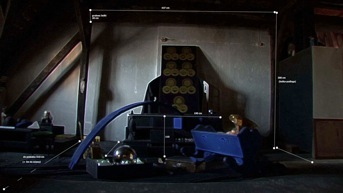
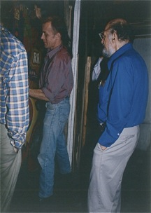
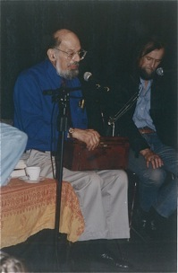

Borowska/Urbanowicz, Schody Dwunastu Szuflad, fot. jp

PRACOWNIA artystyczna Urszuli Broll i Andrzeja Urbanowicza na strychu w śródmieściu Katowic od blisko pół wieku jest zjawiskiem intrygującym na tle nie tylko regionalnej kultury.
Prócz tego, że jest przestrzenią działań dla gospodarzy, od początku była miejscem undergroundowych spotkań, miejscem, w którym rodziły się pomysły, projekty, zamierzenia i działania obejmujące szeroki krąg osób.
Oboje artystów chętnie otwierało swoją prywatność dla spotkań i przedsięwzięć wszelkiej alternatywy. Zrazu w wydaniu awangardowym, później hipisowsko psychodelicznym, aby w latach siedemdziesiątych doprowadzić do zaistnienia pierwszej w PRL-u niezależnej oficyny wydawniczej (1974-79) i działającego przez wiele lat ośrodka buddyjskiego.
Lata osiemdziesiąte nie zapisały się w historii miejsca czymś szczególnym. Urbanowicz po rozwodzie wyjechał na 13 lat do USA a Broll w roku 1982 przeprowadziła się do Przesieki, gdzie do dzisiaj mieszka. Zachowała jednak pracownię, z której okresowo korzystały dwie grupy buddyjskie.
Powrót Urbanowicza w 1991 roku sprawił, że na nowo legendarna pracownia stała się miejscem spotkań, działań parateatralnych, dyskusji, pokazów i warsztatów. Obecna orientacja gospodarza oscyluje wokół artystycznych badań związanych z magią, erotyzmem, spontanicznością, sztuką gestu i talizmanu, co stwarza dodatkowe aspekty dla historii tego znaczącego na kulturalnej mapie Katowic miejsca. Pracownia Piastowska 1 jest siedzibą Towarzystwa Bellmer.

Pracownia
Piastowska 1
w Katowicach
HISTORIA PRACOWNI
(kalendarium)
Jest to dzisiaj już miejsce historyczne, które „pamięta” tak niezwykłe osobowości kultury, jak:
Julian Przyboś i Allen Ginsberg,
Tadeusz Brzozowski i Zdzisław Beksiński,
Henryk M. Górecki i Jerzy Lewczyński,
Izabela Filipiak i Doriane Bihl-Bellmer,
Tadeusz Sławek i Jerzy Illq,
Henryk Waniek i Mariusz Tchorek,
Zofia Rydet i Anna Keyha,
Ryszard Krynicki i Jarosław Markiewicz,
Aduś Szewczyk i Jacek Gulla,
Kora i Kamil Sipowicz,
Jacek Ostaszewski i Mieczysław Litwiński,
Zygmunt Stuchlik i Antoni Halor,
Marian Bogusz i Zdzisław Stanek,
Hilary Krzysztofiak i Maria Obremba,
Jan Kott i Stefan Morawski,
Jacek Woźniakowski i Andrzej Kostołowski,
Stanisław Fijałkowski i Jacek Malicki,
Janusz Bogucki i Anastazy Wiśniewski,
Jerzy Prokopiuk i Andrzej D. Dürer,
Wojciech Eichelberger i Philip Kapleau,
Erwin Sówka i Darek Misiuna,
Urszula M. Benka i Janusz Styczeń,
Villmar Villquist i Stanley Ścierski,
Bolesław Rok i Krzysztof Lewandowski,
Andrzej Chojecki i Stanisław Rosiek,
aby wymienić przynajmniej niektórych.
Magiczna atmosfera i wizualna uroda pracowni jest dobrym tłem dla pokazania jej niezwykłych dziejów. Do pokazania złożonych procesów kultury poprzez metaforę miejsca.


Allen Ginserg, Andrzej Urbanowicz i Tadeusz Sławek w Pracowni Piastowska 1